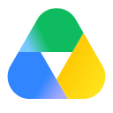

Consulte os arquivos.
Preserve os originais.
A OJU reúne e prepara os materiais do acervo. O Hub consulta os arquivos no Drive e apresenta a organização feita pela nossa equipe.
OJU HUB
Tudo o que sua empresa já produziu pode ser o começo de uma nova ideia.
A OJU compila, organiza e prepara seu acervo audiovisual. No Hub, sua empresa encontra os materiais prontos para consultar e aproveitar em novos projetos.

COMO SEU HUB É PREPARADO
Você envia os links do acervo existente ou a OJU realiza uma diária de captação para a sua empresa.
Revisamos o material e editamos trechos práticos, que podem ser reaproveitados em novas peças.
Nomeamos e categorizamos os arquivos, com informações que ajudam sua equipe a encontrar cada cena.
Sua equipe recebe acesso ao acervo preparado, pronto para servir de base a conteúdos para as mídias sociais.
O HUB POR DENTRO
Todos os arquivos do acervo são compilados e preparados pela OJU. Você encontra os materiais organizados e conectados ao Google Drive™ para usar em novos projetos.

Integração com Google DriveUma coleção simples, organizada e preparada pela OJU.
Nenhum material encontrado. Busque por vista geral, detalhe ou contexto.
Compilamos os arquivos, organizamos as informações e deixamos o acervo pronto para a sua equipe usar.
Um projeto de exemplo já preenchido com imagens do acervo preparado pela OJU.
Sua seleção aparece aqui.
Volte ao acervo e escolha imagens para experimentar o fluxo.As imagens escolhidas no acervo aparecem neste projeto. Você pode trocar a seleção e ver a organização mudar.
Seus arquivos no Drive. A organização e o contexto no Hub.
A OJU reúne e prepara os materiais do acervo. O Hub consulta os arquivos no Drive e apresenta a organização feita pela nossa equipe.
Os materiais selecionados podem ser copiados para a pasta do projeto, junto aos roteiros e documentos de trabalho.
Um produto, três imagens e um projeto já preenchido. Experimente mudar a seleção para ver como o acervo preparado pela OJU ajuda a iniciar uma nova produção.
Explorar o portal demoGoogle Drive é uma marca do Google LLC.
Tenha um bate-papo de 30 minutos para nos contar sobre seu projeto.